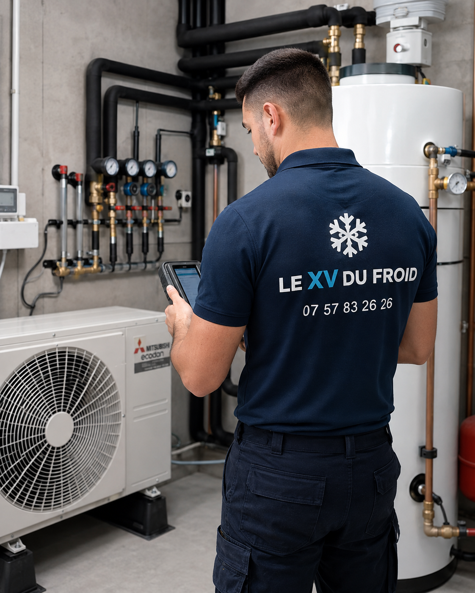

Votre logement
Une maison individuelle dont vous êtes propriétaire. Le statut d’occupation sera précisé lors de l’étude.
Le bâtimentLe XV du Froid · Île-de-France
Remplacez votre chaudière avec un projet adapté à votre maison. Comprenez les conditions du leasing social PAC, vérifiez les premiers critères et demandez votre étude gratuite.
Sans engagement · Faisabilité et financement à confirmer

Étude. Dimensionnement. Installation.
01 / Comprendre
Un mot courant. Une offre à examiner dans le détail.
Vous cherchez une pompe à chaleur en leasing pour remplacer votre chaudière ? Cette expression désigne couramment la nouvelle offre intégrée pour les pompes à chaleur. Elle regroupe la pose de l’équipement, des services et le financement du reste à charge.
Les précommandes ont ouvert le 1er octobre 2026. Le dispositif cible les propriétaires de maisons individuelles aux revenus modestes ou très modestes. Son fonctionnement se vérifie dans la proposition de l’opérateur.
Pour avancer, commencez par décrire votre installation actuelle : énergie utilisée, âge de la chaudière, surface chauffée et pièces où le confort est insuffisant. Ajoutez votre objectif : remplacer un équipement vieillissant, mieux maîtriser le budget chauffage ou prévoir des travaux dans la maison. Ces éléments permettent de préparer un échange concret, avant de discuter du matériel et de la solution de financement.
Avec Le XV du Froid, la demande commence par l’étude technique du projet. Ce formulaire ne souscrit pas une offre d’un consortium lauréat et ne vaut pas accord de financement.
02 / Les premiers critères
Une maison individuelle dont vous êtes propriétaire. Le statut d’occupation sera précisé lors de l’étude.
Le bâtimentLe remplacement d’un chauffage fossile par une pompe à chaleur air-eau est au cœur du projet.
L’installation existanteDes ressources sous les plafonds du dispositif, calculées avec le revenu fiscal de référence.
Les ressourcesLa vérification du projet comporte plusieurs étapes. D’un côté, votre situation doit être examinée au regard des critères du dispositif ; de l’autre, la maison doit se prêter à l’installation envisagée. Une orientation favorable dans le formulaire ne remplace donc ni l’examen des justificatifs ni l’étude technique. Si vous hésitez sur votre statut, votre chauffage ou un dossier d’aide en cours, indiquez-le lors du premier échange.
En Île-de-France, utilisez les plafonds de la région et le nombre de personnes composant votre ménage. Préparez votre avis d’imposition pour la vérification ultérieure, mais ne joignez pas de document fiscal à cette demande de contact. Vous pouvez commencer par présenter votre maison et poser vos questions sur le parcours à suivre.
Revenu fiscal de référence annuel du ménage. Le salaire mensuel ne permet pas de conclure à l’éligibilité.
Vérifier les conditions officielles →| Personnes dans le foyer | Plafond annuel |
|---|---|
| 1 personne | 29 253 € |
| 2 personnes | 42 933 € |
| 3 personnes | 51 564 € |
| 4 personnes | 60 208 € |
| 5 personnes | 68 877 € |
| Par personne supplémentaire | + 8 663 € |
Votre projet, en quelques réponses
Indiquez votre logement et votre chauffage. Vous obtiendrez une orientation pour préparer l’étude, sans transmettre vos revenus.
Les plafonds de ressources et un éventuel dossier Anah restent à vérifier séparément. Le test ne décide pas de votre éligibilité financière.
03 / Prix, mensualité & aides
Le bon chiffre est celui de votre projet.
Pour comparer les offres, demandez quatre informations écrites : le prix posé, les aides retenues, le reste à charge et le coût total du financement. Ajoutez les prestations récurrentes et la consommation électrique estimée au budget.
Une annonce « à partir de » ne précise pas forcément les adaptations du circuit de chauffage, la dépose de la chaudière ou les travaux électriques. Faites détailler ces postes sur le devis.
Comprendre les règles CEE et MaPrimeRénov’ →
L’aide spéciale CEE de l’offre intégrée n’est pas cumulable avec MaPrimeRénov’. Signalez tout dossier Anah déjà déposé avant de choisir votre parcours.
Le cadre vise un remboursement sur trois ans dans la majorité des cas, avec une limite de cinq ans. La comparaison du budget chauffage repose sur des hypothèses conventionnelles : faites préciser celles retenues pour votre maison.
Avant de comparer des mensualités, vérifiez que les devis couvrent le même périmètre. Notez ce qui est prévu pour la dépose, les raccordements, la mise en service et les éventuelles adaptations. Demandez ensuite quelles prestations sont facturées séparément. Une offre plus lisible vous permet de comprendre où va votre budget, même si les modèles proposés diffèrent.
Pour la partie financement, faites préciser le premier paiement, le calendrier des échéances, les frais et les conditions de fin de contrat. Pour les dépenses d’usage, demandez sur quelles données du logement repose l’estimation. Conservez votre ancienne facture de chauffage comme élément de discussion ; évitez de comparer une facture réelle et une projection sans connaître leurs hypothèses.
Faire étudier mon budgetModèle, puissance, raccordements, adaptations et mise en service : chaque poste doit être identifiable.
Demandez le calendrier des aides et des paiements, le nombre d’échéances et tous les frais prévus.
Comparez entretien, dépannage et consommation sur les mêmes hypothèses de confort et d’usage.
04 / L’offre intégrée
Voici les composantes à retrouver dans la proposition de l’opérateur.
Équipement air-eau et pose.
Mensualisation du reste à charge.
Entretien et interventions.
Gestion de la consommation.
Offre à prix fixe proposée.
Le cadre prévoit le libre choix du fournisseur d’électricité. Consultez le dossier de présentation officiel et les conditions du contrat.
05 / Le choix technique
Décrivez d’abord ce que vous voulez chauffer. Un projet avec radiateurs à eau ne se prépare pas comme l’installation de climatiseurs réversibles dans plusieurs pièces.
À examiner : circuit d’eau, radiateurs, température de départ, eau chaude sanitaire et emplacement extérieur.
À examiner : pièces à équiper, unités intérieures, passages de liaisons et besoin de rafraîchissement.
Lors de l’étude, décrivez les pièces réellement chauffées, les travaux d’isolation déjà réalisés et les changements prévus dans la maison. Demandez comment la puissance proposée a été choisie et comment le confort sera vérifié après l’installation. Précisez aussi vos habitudes : présence dans la journée, températures souhaitées et besoin d’eau chaude.
Pour l’unité extérieure, préparez des photos de l’emplacement et de ses accès. Signalez les chambres voisines, les limites de propriété et les passages à préserver. Pour les équipements intérieurs, indiquez l’espace disponible et les contraintes d’accès au circuit de chauffage. Ces questions aident à préparer la visite et à repérer les adaptations à chiffrer.
L’offre intégrée présentée ici concerne l’air-eau. Pour un autre projet, consultez notre page installation de climatisation réversible ou demandez un échange technique.
06 / Votre parcours
Surface, chauffage actuel, confort attendu et contraintes connues : ces informations préparent le premier échange.
Emplacement extérieur, accès, acoustique, isolation et émetteurs : chaque point est à examiner pour dimensionner le projet.
Vous examinez le devis, les aides et les modalités du financement disponible avant de vous engager.
07 / Proche de votre projet
Vous recherchez une étude de leasing PAC en Seine-et-Marne, dans les Yvelines, l’Essonne ou autour de Paris ? Précisez votre commune et votre installation : nous pourrons préparer un échange utile.
À Paris et en petite couronne, indiquez aussi les accès et les contraintes de voisinage. Pour une maison, décrivez le jardin, la terrasse ou l’espace envisagé pour l’unité extérieure.
En Seine-et-Marne, dans les Yvelines ou en Essonne, précisez les caractéristiques de la maison et le chauffage central existant. Dans les Hauts-de-Seine, en Seine-Saint-Denis, dans le Val-de-Marne et le Val-d’Oise, décrivez également les accès et la proximité des bâtiments voisins. Votre commune et quelques informations précises sont plus utiles à l’étude qu’une demande limitée à un prix mensuel.
Consulter nos zones d’intervention →Votre étude gratuite
Un premier échange pour comprendre votre projet de pompe à chaleur, vérifier les contraintes et définir la prochaine étape.
Demande sans engagement. Aucun justificatif bancaire à transmettre ici.
Les réponses utiles
Conditions, budget et installation.
Poser ma question →C’est le nom couramment donné à l’offre intégrée PAC : équipement, installation, maintenance, pilotage et financement du reste à charge. Les précommandes ont ouvert le 1er octobre 2026. Il faut examiner le contrat proposé, plutôt que supposer qu’il fonctionne comme un leasing automobile.
Vous pouvez présenter votre projet à notre équipe quelle que soit votre situation. L’accès à l’offre intégrée aidée dépend, lui, des critères du dispositif. Un appartement, un local professionnel ou un autre chauffage demandent une orientation différente.
Il n’existe pas de tarif unique pour tous les logements. Demandez une proposition indiquant le solde financé, les échéances, les services et les hypothèses de consommation. Un calcul personnalisé est plus utile qu’une mensualité annoncée sans contexte.
Non : l’aide spéciale CEE de l’offre intégrée n’est pas cumulable avec MaPrimeRénov’. Un dossier Anah déjà déposé doit être signalé. Faites vérifier le parcours d’aide avant de commencer les travaux.
Utilisez le revenu fiscal de référence des personnes composant le ménage, pas le salaire mensuel. Comparez-le au plafond correspondant à la taille du foyer et à la région. Le simulateur public permet de préciser votre situation.
La demande sur cette page concerne l’étude du projet. Elle ne constitue pas une souscription à l’offre intégrée ni un accord de prêt. Le financement et les aides doivent être validés par les organismes concernés.
C’est une possibilité à examiner avec votre circuit de chauffage. Il faut regarder les radiateurs ou le plancher chauffant, les températures nécessaires, l’isolation, l’emplacement et les besoins d’eau chaude. Le dimensionnement vient après cette analyse.
Demandez une étude spécifique : place disponible, autorisations et contraintes acoustiques doivent être vérifiées. Une solution air-air réversible peut aussi être discutée. Cette démarche est distincte de l’offre intégrée destinée aux maisons individuelles.
Le cadre officiel laisse le choix du fournisseur. Vous pouvez refuser l’offre d’électricité associée ou en changer sans incidence sur le financement ou l’entretien de la PAC. Vérifiez la traduction de cette règle dans votre contrat.
Préparez la surface chauffée, le type de chaudière, quelques photos des radiateurs et de l’emplacement extérieur, ainsi qu’un DPE s’il est disponible. Lors du premier contact, ne transmettez pas de justificatifs bancaires dans le formulaire.
Non. Vous décrivez votre projet et demandez un échange. Toute décision sur les travaux ou le financement intervient ensuite, sur la base d’une proposition écrite.
Pour approfondir